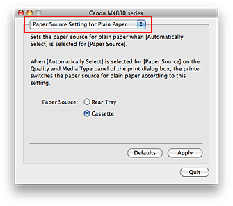

The procedure for setting the paper source is as follows:
-
Select Paper Source Setting for Plain Paper from the pop-up menu on the Canon IJ Printer Utility
 -
Apply the settings
Select the paper source for plain paper, and then click the Apply button.
The setting is enabled hereafter.
 Important
Important
-
The descriptions in the machine manual assume that the plain paper is supplied from the cassette. When you change the paper source setting, replace all instances of "cassette" with the new paper source.